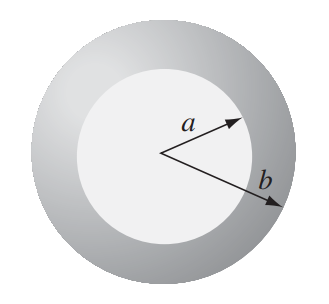
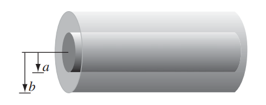

#Soal 1. Hitunglah usaha yang dilakukan untuk memindahkan muatan $2C$ yang berada dalam medan listrik \(\textbf{E} = 4x\hat x - 8 y\hat y\) bila muatan tersebut dipindahkan mengikuti lintasan garis lurus yang menghubungkan titik-titik sebagai berikut:
#Soal 2. Sebuah bola berongga memiliki rapat muatan $\rho = \frac{k}{r^2}$ di daerah $a \leq r \leq b$ (lihat Gambar.1)

#Soal 3. Sebuah kapasitor terdiri dari dua tabung logam silinder panjang ko-aksial dengan jari-jari $a$ dan $b$ (Gambar.2). Bila muatan yang tersimpan pada kapasitor adalah $Q$, maka:

#Soal 4. Sebuah pipa berbentuk balok memanjang sejajar sumbu $-z$ (dari $-\infty$ ke $\infty$). Ketiga sisi, di $x = 0$ dan $y=0$, ditanahkan (grounded), $V=0$. Sisi keempat, di $y=b$ memiliki potensial yang dinyatakan sebagai fungsi $V_0(x)$.